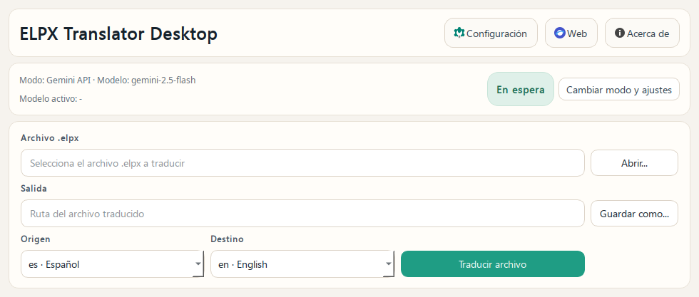
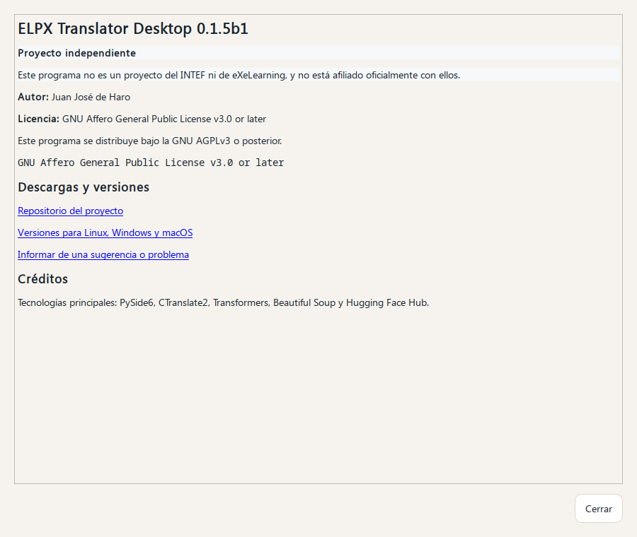

Qué hace
Abre un archivo .elpx, detecta el texto traducible y genera una copia en el idioma que elijas.
Para profesorado y personas no técnicas
ELPX Translator Desktop sirve para traducir proyectos de eXeLearning sin depender de servicios externos. Está pensado para ahorrar tiempo al adaptar materiales ya creados a otro idioma.

Qué es
Abre un archivo .elpx, detecta el texto traducible y genera una copia en el idioma que elijas.
Sobre todo para docentes que ya tienen materiales creados y quieren reutilizarlos sin volver a traducir todo a mano.
No hace falta saber programar, usar terminal ni entender detalles técnicos sobre modelos de IA.
Descargas
La página consulta GitHub Releases y muestra la última beta publicada. En Linux verás tanto el paquete .deb como la AppImage. Cuando haya una versión estable realmente lista, también aparecerá aquí.
Versión estable
La opción recomendada para la mayoría de personas.
Última beta
Si quieres probar antes los cambios más recientes y ayudarnos a detectar fallos.
Cómo se usa
Selecciona el proyecto .elpx que quieres traducir.
Marca el idioma de origen y el idioma de destino.
La aplicación crea un nuevo archivo para que puedas revisarlo y seguir trabajándolo en eXeLearning.
Rendimiento
La aplicación incluye cuatro modos para adaptarse mejor a tu equipo. No hace falta entender detalles técnicos: basta con elegir el que mejor encaje con tu forma de trabajar.
Prioriza que el ordenador siga respondiendo con comodidad mientras haces otras cosas. Puede tardar más, pero molesta menos al resto del sistema.
Es la opción recomendada para la mayoría de personas. Busca un punto razonable entre velocidad y comodidad de uso.
Usa más recursos para intentar terminar antes. Puede ser útil si quieres reducir tiempos y no necesitas usar mucho el equipo al mismo tiempo.
Exprime más el ordenador para ir lo más rápido posible. Conviene usarlo cuando el equipo es potente y no vas a hacer otras tareas importantes a la vez.
Equipo recomendado
No hay una lista cerrada de requisitos mínimos exactos, pero estas referencias ayudan a saber qué esperar antes de instalarla.
Un equipo de 64 bits con al menos 8 GB de RAM suele ser una base razonable para trabajar con más tranquilidad.
Si el ordenador tiene más memoria y varios núcleos de CPU, la traducción suele ir mejor, sobre todo con archivos grandes.
La aplicación puede funcionar en equipos más justos, pero es normal que tarde más y que convenga usar modos como Suave o Equilibrado.
La primera ejecución también necesita espacio libre para descargar el modelo y dejarlo guardado en la caché local.
Capturas

Privacidad e IA
La aplicación usa un modelo abierto de traducción para proponer el texto en otro idioma. Su trabajo es ayudarte con la traducción automática del contenido del proyecto.
El modelo base es M2M100 418M, publicado por Facebook AI. La aplicación usa una versión optimizada para que funcione con más agilidad en equipos normales.
El contenido del archivo se procesa en tu ordenador durante la traducción.
No envía tu proyecto a un servicio externo para traducirlo. Solo puede conectarse a internet para descargar el modelo la primera vez y para comprobar si hay nuevas versiones.
Preguntas habituales
No. Es un proyecto independiente y no está afiliado oficialmente con el INTEF ni con eXeLearning.
No. La primera vez puede hacer falta para descargar el modelo y también para comprobar si hay nuevas versiones. Después, la traducción trabaja en local.
No conviene prometer eso. La aplicación está pensada para ahorrar mucho trabajo, pero siempre es recomendable revisar el resultado final antes de publicarlo.
Usa el enlace de sugerencias y errores. Si puedes, indica qué sistema operativo usas y adjunta el archivo o una explicación breve del problema.